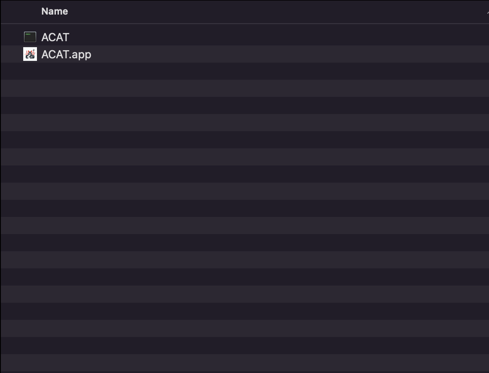
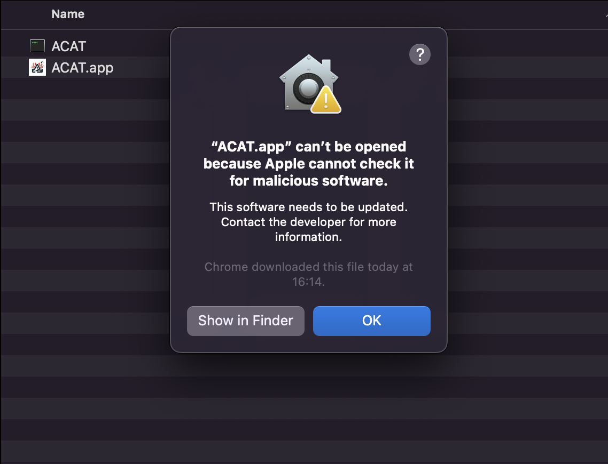
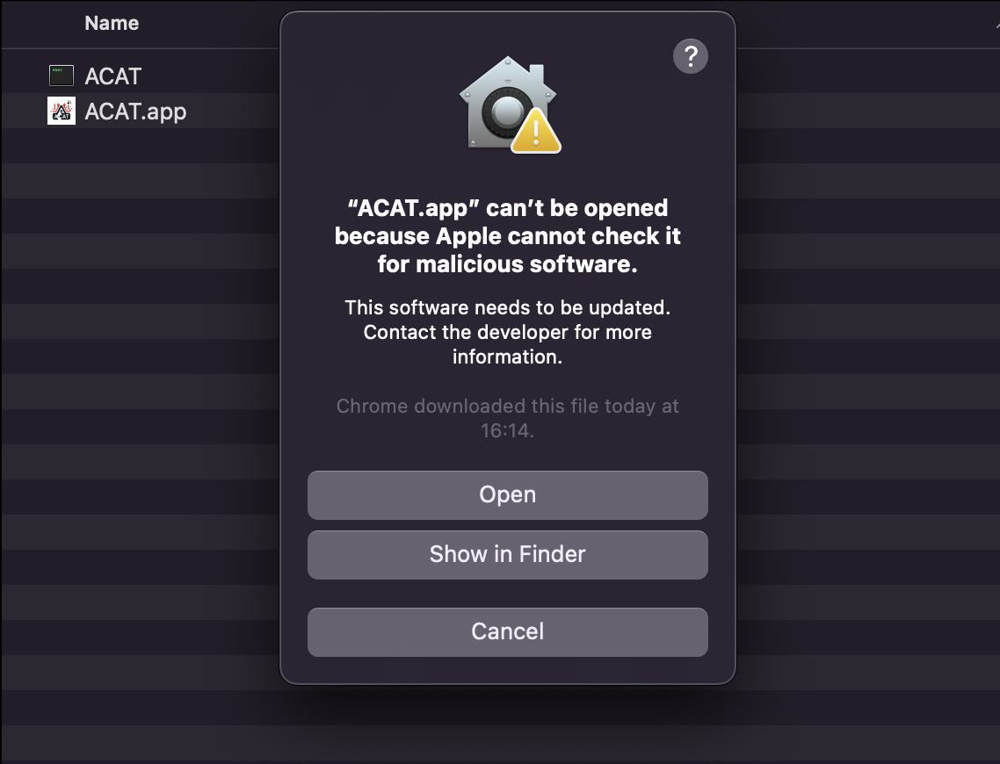
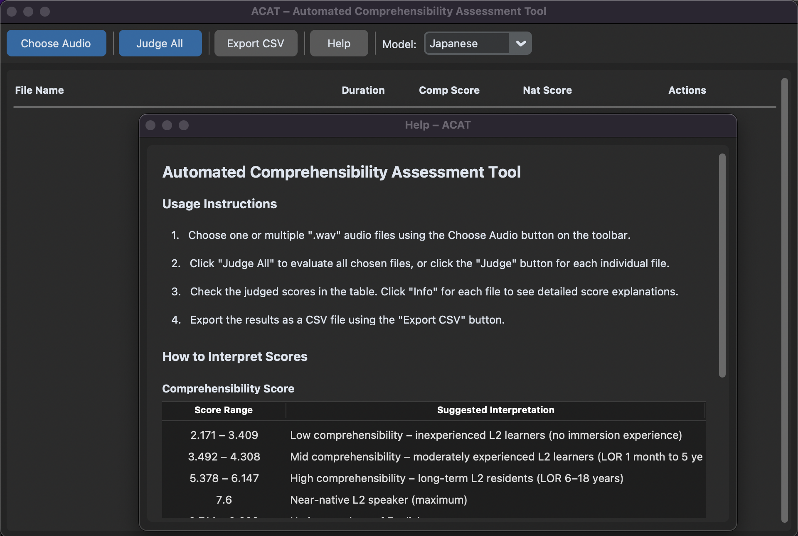

Kazuya Saito1,2, Magdalena Kachlicka1,3,4
1University College London 2Tohoku University 3University of Bern 4Birkbeck, University of London
Comprehensibility, or listeners’ perceived ease of understanding second language (L2) speech, is a central construct in L2 speech research. However, collecting comprehensibility ratings is very time-consuming, labour-intensive, and difficult to scale, as each new dataset typically requires the recruitment of listener panels and the administration of rating sessions. Here, we present the Automated Comprehensibility Assessment Tool (A-CAT), a transparent and locally usable tool for automated assessment of L2 speech comprehensibility. Unlike commercially restricted or black-box automated assessment systems, A-CAT uses a small set of theoretically motivated acoustic predictors indexing segmental, prosodic, and fluency dimensions of spontaneous speech. A-CAT is distributed as a standalone application and can be run locally without programming knowledge or uploading speech data to external servers. The tool provides L2 speech researchers with a practical, interpretable, and privacy-conscious method for estimating comprehensibility from spontaneous speech.
Please click one of the buttons below. The download should start automatically.
Depending on your internet speed, this might take from a few seconds to a couple of minutes. You should be able to find the app in your "Downloads" folder.
The installation includes all the required files and packages and should take only a few seconds.
Note: The app was developed and tested mostly on macOS. If you encounter any problems on Windows or Linux, please let us know. We will do our best to resolve them as soon as possible.




Note: The app inherits your computer's settings, so it will display in dark colours (as in the screenshots) if your computer is in dark mode.
TBC.
TBC.
The A-CAT app accepts WAV and MP3 formats of audio recordings. Please do not upload videos or other file formats.
Your recording should be at least 30 seconds long to give you a reliable score. Shorter recordings can be uploaded, but they might not contain enough speech to produce good estimates of the parameters used to calculate your comprehensibility score.
Background noise (e.g., a radio or TV, people talking, a washing machine, or music) can interfere with detecting the signature of your voice.
If you cannot find a quiet place, a blanket can help absorb background noise and echo. Sit at a table and drape a blanket over yourself and the microphone, like a small tent. Leave enough room to breathe comfortably.
Play back your recording and listen for background noise, echo, or sections where your voice is too quiet or distorted. If you notice any of these, adjust your setup and record again.
Once you open the app, it is ready to use. The app needs read and write access to the folder where you store your audio samples, so please follow your system’s guidelines to enable this. The app only reads the audio files you upload (one or more WAV or MP3) and saves the outputs needed to compute your scores (i.e., {filename}.auto.TextGrid, which contains annotations of filled pauses and syllable nuclei, and {filename}.auto.Table, which contains time, frequency, formant, and other coefficient values). If you choose to save your results, the app will also write a CSV file containing them. The app works locally, so all the files you upload or save remain on your computer.
The video below provides a quick walkthrough of how to use the app:
Note: Depending on your system, it might take a few seconds to calculate your results, especially if you have uploaded multiple speech recordings. Please click the "Judge" or "Judge All" button only once and wait for your results.
Short explanation of how to interpret the output.

The authors would like to thank Larry Zeng for developing the first prototype of the app, which the current version builds on.